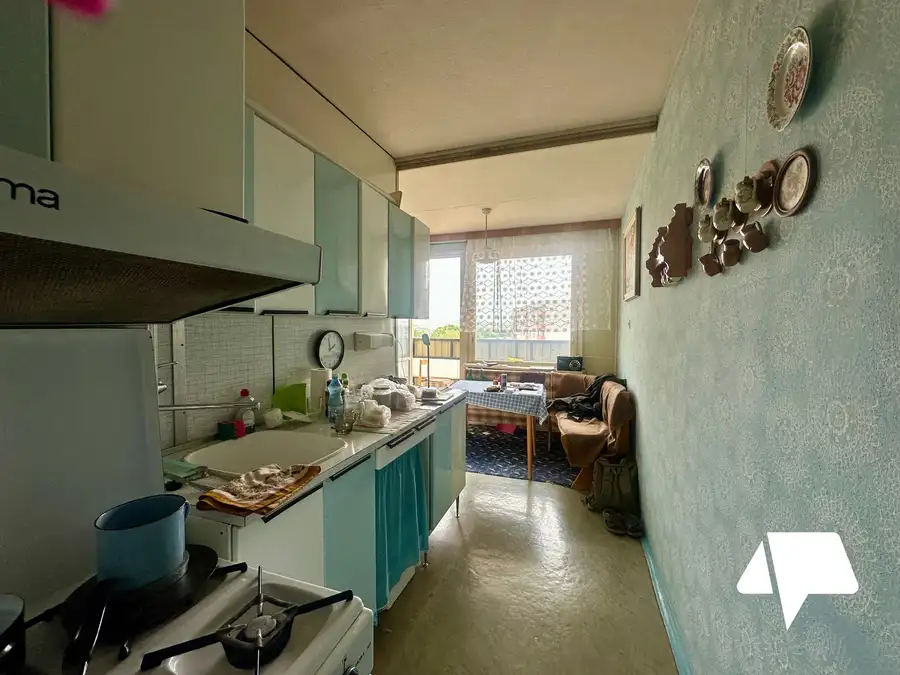
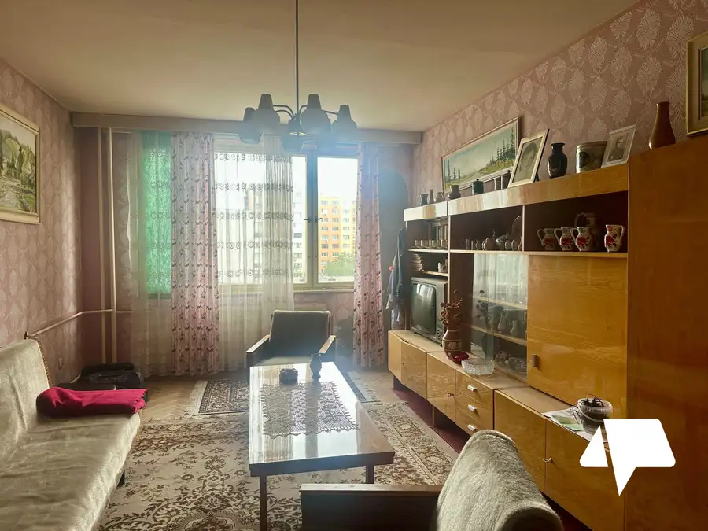
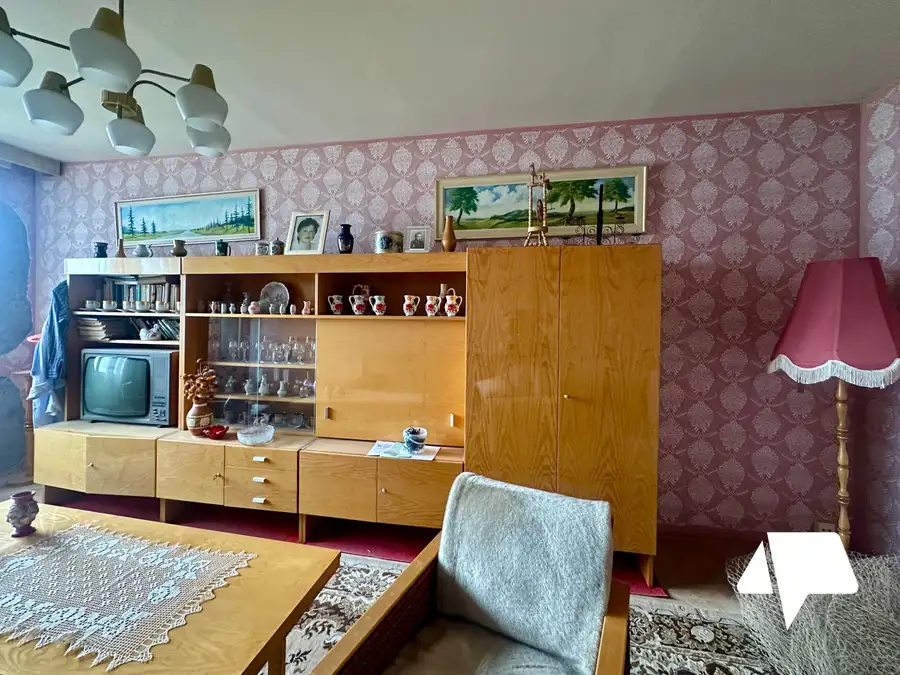
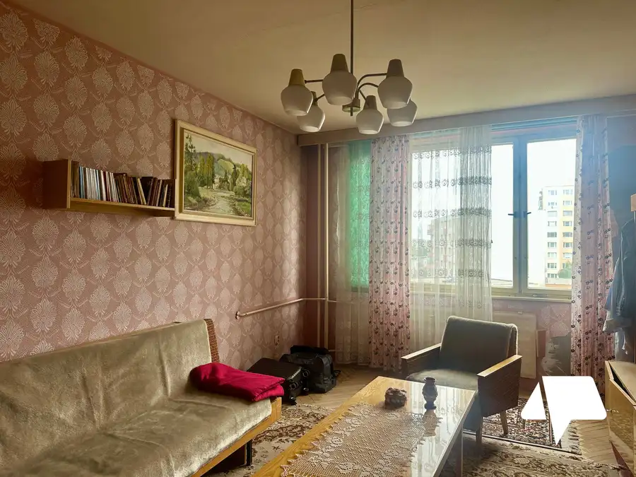
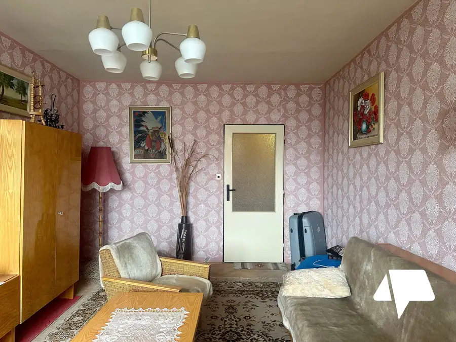
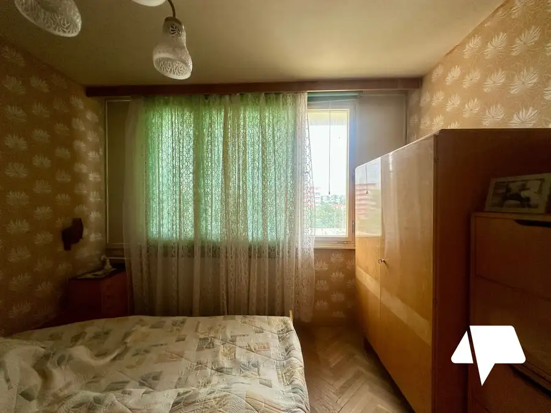
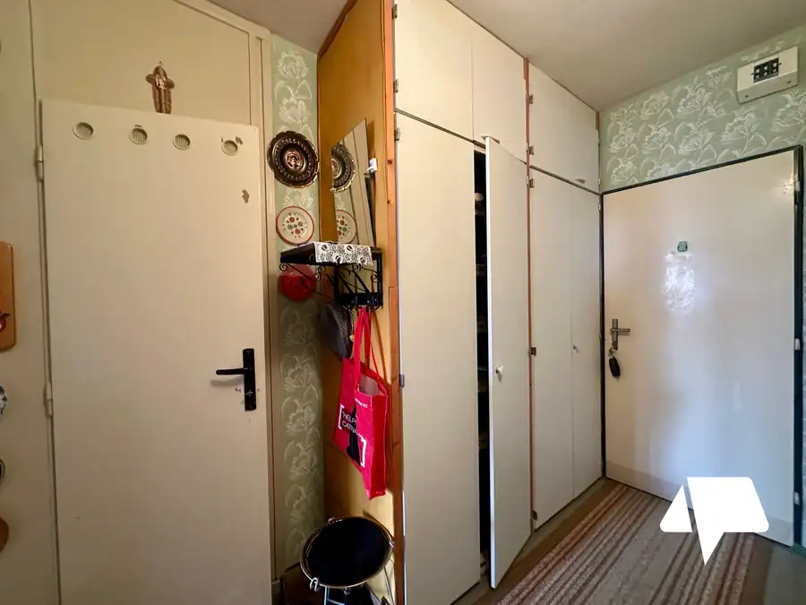
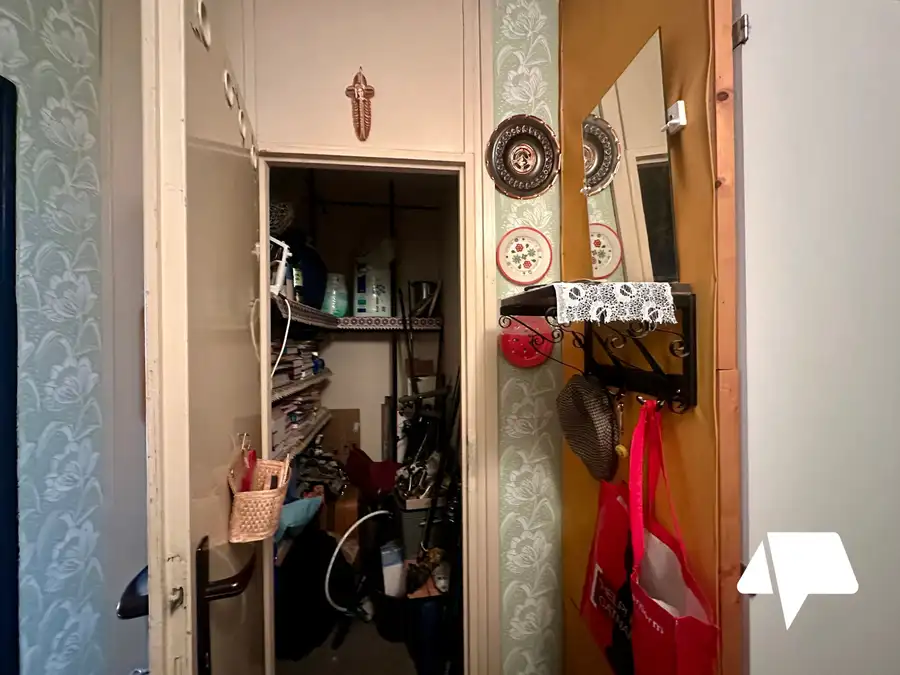

Predaj 2 izbový byt Chrenová, Sitnianska
Nitra








- Dispozícia2-izbový
- Plocha62 m²
- Poschodie7. z 12
- StavPôvodný stav
O nehnuteľnosti
Na predaj 2 izbový byt s balkónom, veľkorysá výmera 62 m², výborná investičná príležitosť.Ponúkame vám byt v pôvodnom stave, ktorý si môžete prerobiť podľa vašich predstáv.2 izbový byt v jednej z najžiadanejších lokalít v Nitre, Chrenová, ulica Sitnianska.Dispozíciu bytu tvorí vstupná chodba, kumbál, 2 samostatné nepriechodné izby,kuchyňa s východom na balkón, kúpeľňa a toaleta. K bytu prislúcha murovaná pivnica.V izbách sa nachádzajú pôvodné zachované drevené parkety.Byt sa nachádza na 6. poschodíMesačné náklady 150 eur.Bytový dom je zrekonštruovaný, disponuje 2 výťahmi.Chrenová patrí medzi najvyhľadávanejšie lokality Nitry, je tu kompletná občianska vybavenosť, školy, škôlky, obchody a služby. Výborná dostupnosť MHD, plno zelene, detské ihriská.Najvyhľadávanejšia lokalita v prípade investície a prenájmu.Byt je ideálny pre ľudí, ktorý si chcú vytvoriť moderné bývanie podľa vlastných predstáv, ako aj veľmi výhodná a návratná investícia na prenájom.Prečo netreba dlho váhať a vybrať si práve tento byt?Jedna s TOP lokalít na Chrenovej, veľkorysá výmera, možnosť rekonštrukcie podľa vlastných predstáv.Cena je vrátane provízie realitnej kancelárie. Kompletný právny a poradenský servis zabezpečíme.Naši odborníci v Nitrianskej realitnej kancelárii vám poskytnú kompletné finančné poradenstvo a pomôžu vám s vybavením hypotekárneho úveru.Vypočítajte si výšku mesačnej splátky hypotéky na našej kalkulačke tu: https://profibroker.sk/hypoteka/Šťastie je doma.Jarmila Svoradová0917 866 751svoradova@nitrianskereality.com
Parametre
- Cena vrátane energií
- Nie
- Druh
- 2 izbový byt
- Dátum zverejnenia
- 23. 09. 2026
- Energetický certifikát budovy
- nie je
- Podlažie
- 7
- Počet lodžií
- 1
- Počet nadzemných podlaží
- 12
- Počet pivníc
- 1
- Stav nehnuteľnosti
- Pôvodný stav
- Typ
- Predaj
- Typ konštrukcie
- Panelová
- Vybavenie
- Lodžia, Pivnica, Verejné parkovanie
- Úžitková plocha
- 62 m²